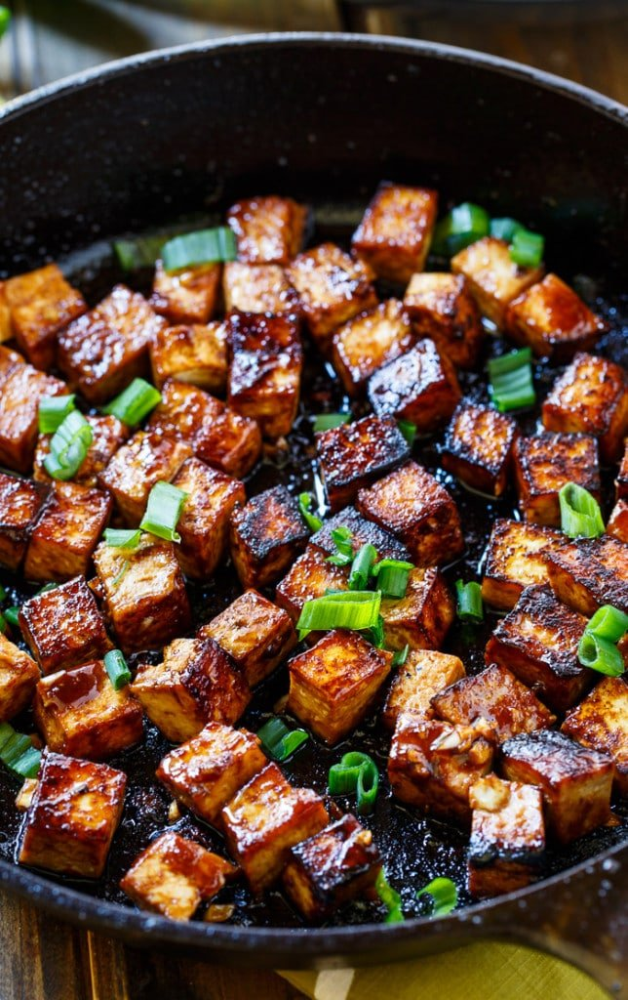

Here comes the tofu

You will need:
- 400 grams of tofu
- 400 grams soba noodles
- 2 oranges
- a cup of vegetable broth or miso broth
- 4 tbs of apple cider vinegar
- 1 tbs of agave syrup
- 3 tbs of soy sauce (light)
- 2-3 tbs of gochugaru red chilli flakes
- some minced ginger
- some cornstarch
- 5 cloves of garlic, minced
- delicate oil
Garnish:
- Some green onion
- Roasted sesame seeds
The process:
- Start by cutting the tofu into cubes of preffered size, set aside.
- In a bowl combine: vegetable broth, juice from the two oranges, vinegar, agave syrup, soy sauce, chilli flakes, ginger
and garlic. Stir until they combine.
- Marinate the tofu in the abovementioned mixture for some time (the longer the better preferably overnight).
- Remove the tofu from the marinade. Heat up a frying pan with a generous splash of oil. Fry the tofu until golden
stiring whenever necessary.
- Once the tofu is ready, pour in the marinade and simmer under the lid for about 10 minutes.
- In the meantime: cook the noodles according to the instructions on the package. When they are ready - strain them
and submerge in some cold water. Strain again and set aside.
- Reduce heat to mnimum and add some cornstarch to thicken the sauce (start with 1 tbs, add more if necessary).
Stir frequently and after a while turn off the heat completely.
- Plate. Garnish with green onion and sesame seeds. The tofu itself tastes better the next day. Enjoy :)
l>